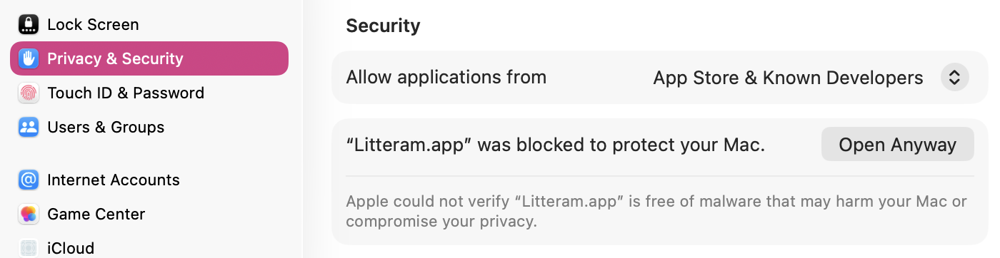

Install
Get up and running.
Litteram is a native Mac app distributed outside the App Store. The first launch requires a one-time approval in System Settings.
ⓘ
Signed for local use
Litteram is signed with an ad-hoc certificate. The first time you open it, macOS blocks it. This is expected - and safe to allow.
-
1
Download & move to Applications
Open the downloaded zip and drag Litteram into your Applications folder.
-
2
First launch is blocked - that's normal
Double-click Litteram. macOS says it was blocked to protect your Mac. Click Done.
-
3
Allow it in System Settings
Open System Settings, Privacy & Security, then click Open Anyway.
-
4
Confirm and start writing
Click Open Anyway and enter your password. From then on, Litteram opens normally.

System Settings - Privacy & Security - click Open Anyway
Ready to try it?
Download the latest build from GitHub Releases.